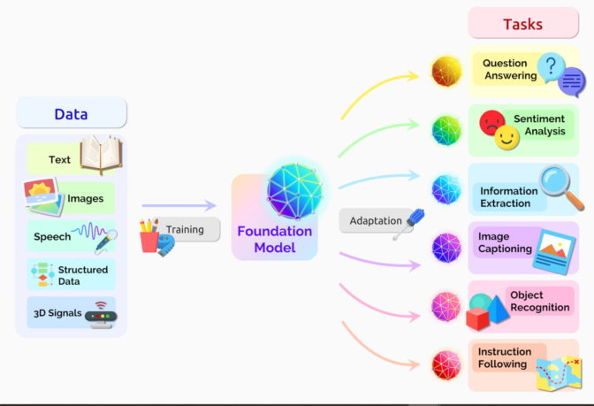

트랜스포머
트랜스포머 모델은 문장 속 단어와 같은 순차 데이터 내의 관계를 추적해 맥락과 의미를 학습하는 신경망이다.
어텐션(attention) 또는
셀프어텐션(self-attention)이라 불리며 진화를 거듭하는 수학적 기법을 응용해 서로 떨어져 있는
데이터 요소들의 의미가 관계에 따라 미묘하게 달라지는 부분까지 감지해낸다.
트랜스포머 모델의 기능은?
트랜스포머는 텍스트와 음성을 거의 실시간으로 옮겨 청각 장애인 등 다양한 청중의 회의와 강의 참여를 지원합니다.
DNA의 유전자 사슬과 단백질의 아미노산에 대한 이해를 도와 신약 디자인을 가속하기도 하죠.
파운데이션 모델이라고도 불리는 트랜스포머는 여러 데이터 소스와 함께 다양한 영역에서 활용되고 있습니다.

트랜스포머는 트렌드와 이상 징후를 감지해 부정 방지, 제조 간소화, 온라인 추천, 헬스케어 개선 등에 기여합니다.
우리가 구글이나 마이크로소프트 빙(Microsoft Bing)에서 검색할 때에도 트랜스포머를 사용합니다.